Module 4.
같은 Claude Code로, 이번에는 업무도구를 만듭니다.
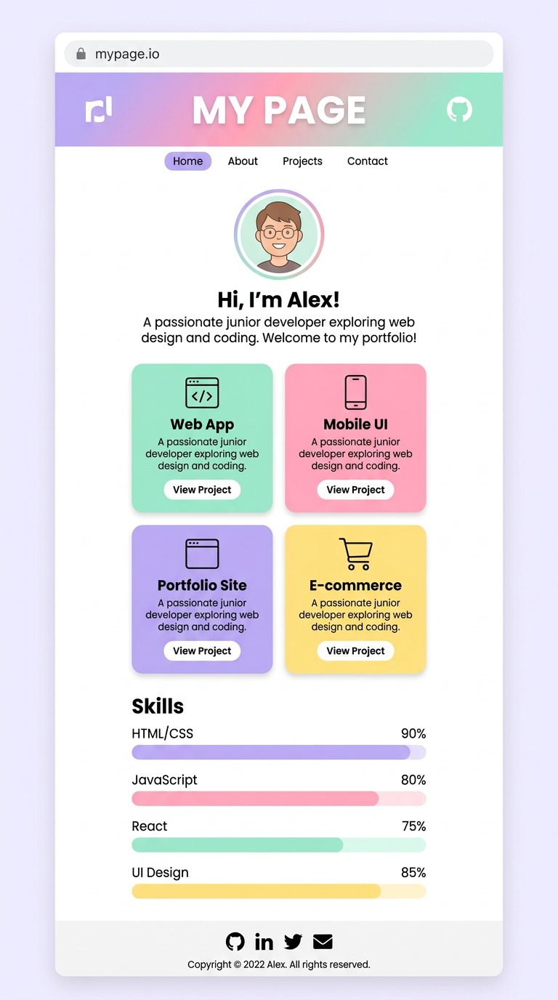
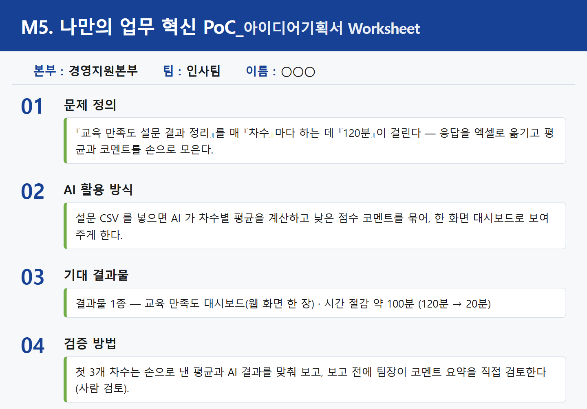
M1
웹페이지 · 기획서 초안
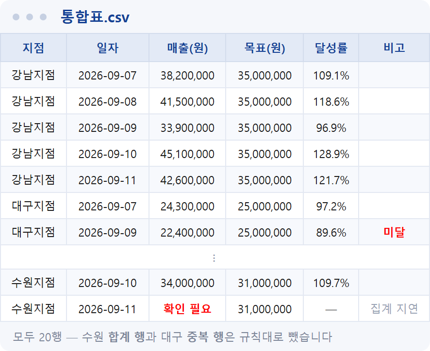
M2
주간 실적 통합표
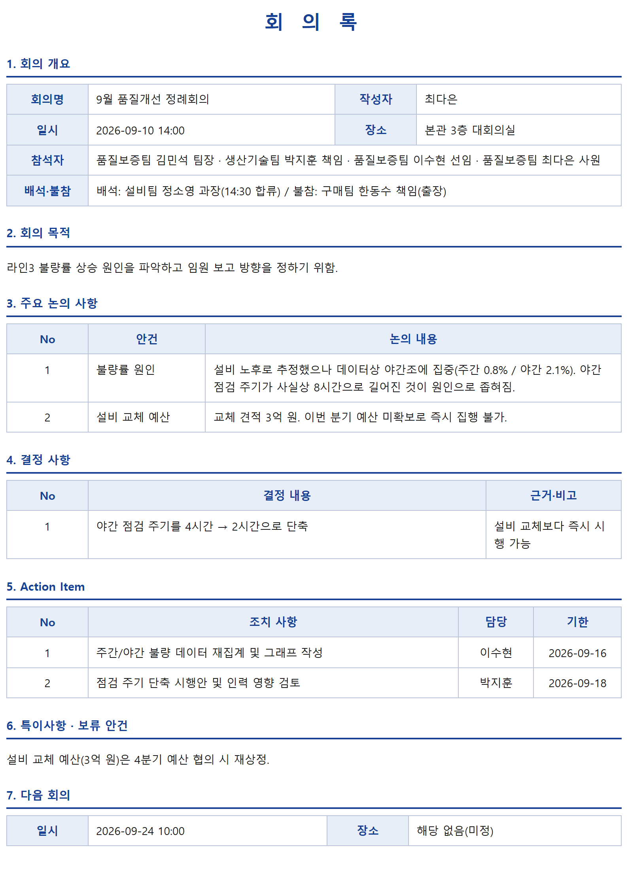
M3
회의록 PDF
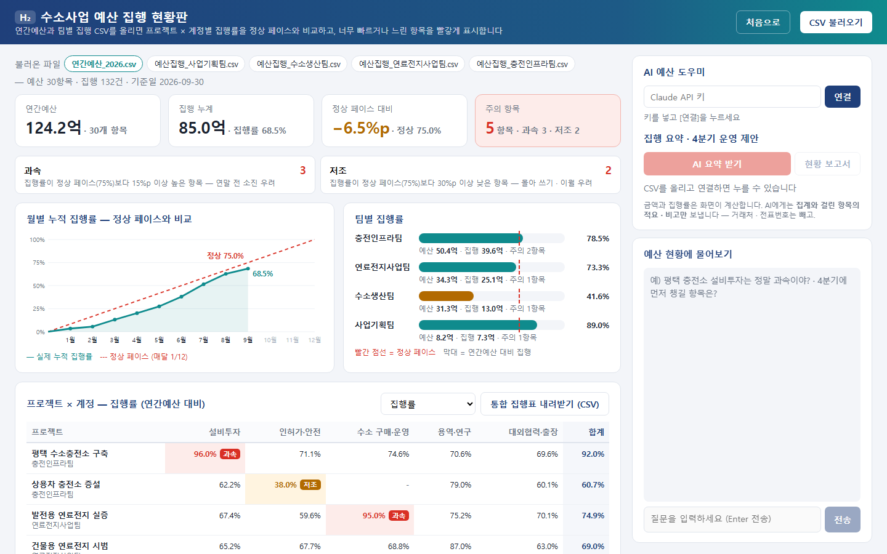
M4
예산 집행 현황판
지금 여기
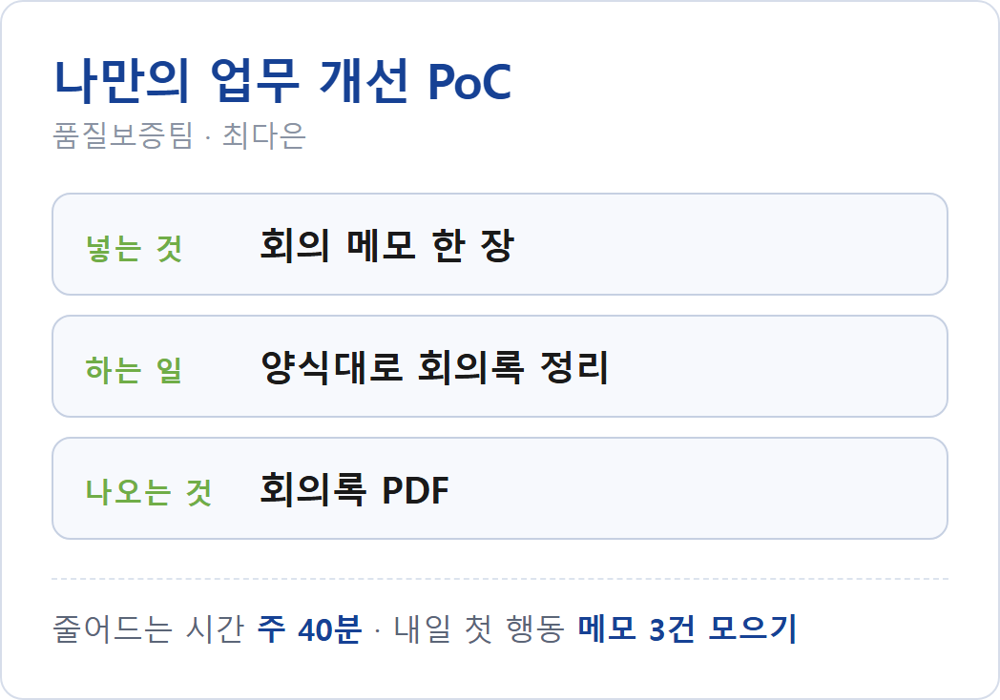
M5
아이디어 기획서 · 목업 앱
예산 · 집행 내역을 넣으면 집행률 · 페이스 비교 · 주의 항목 · AI 요약 · 현황 보고서까지 되는 화면을 만듭니다.
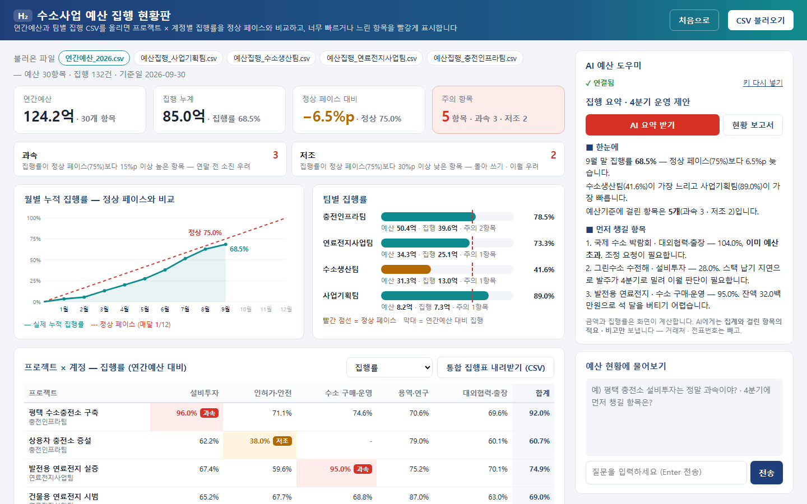
① 예산 집행 현황판 · AI 요약
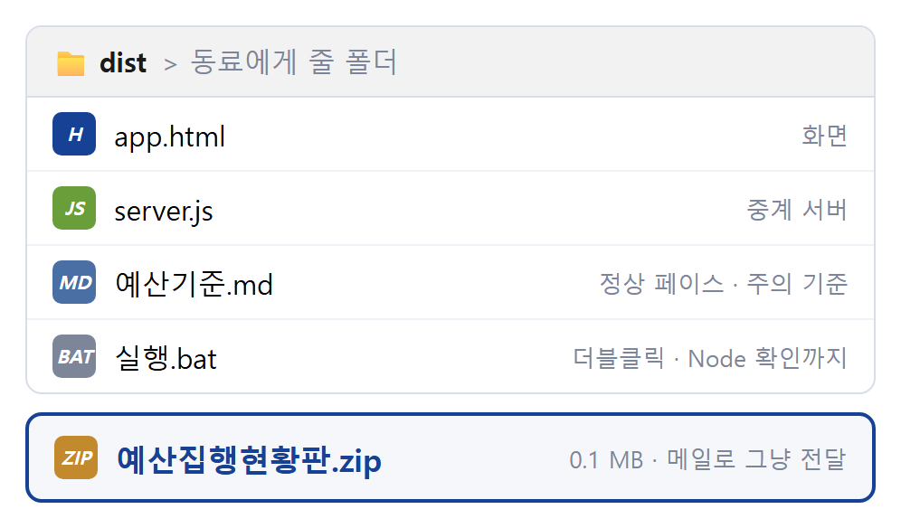
② 압축 파일 하나로 전달
자, 그러면 지금부터 멋진 작품을 하나 만들어 보겠습니다.
다섯 파일을 합쳐 페이스를 벗어난 항목을 빨갛게
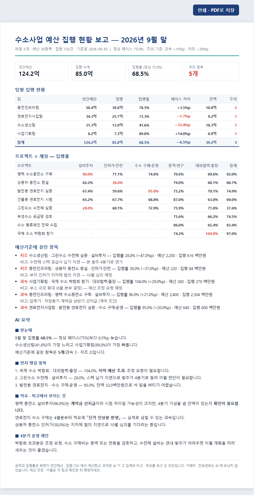
AI 요약이 담긴 현황 보고서
오늘 여러분이 만들 한 화면입니다.
CHAPTER 1
무엇을 만들지 정하고, AI 기능을 넣기 위한 준비물 하나를 챙깁니다.
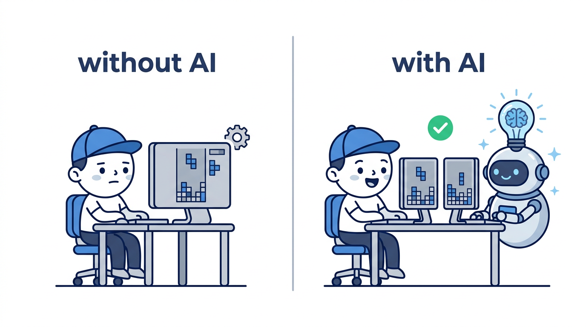
App
혼자 하는 테트리스 — 정해진 규칙대로만 움직입니다
AI App
AI와 대결하는 테트리스 — 상대가 보고 판단합니다
연간예산과 팀별 집행 CSV를 넣으면, 집행률을 정상 페이스와 비교해 주의할 항목을 찾고 AI가 사정 요약 · 보고서까지 써 줍니다.
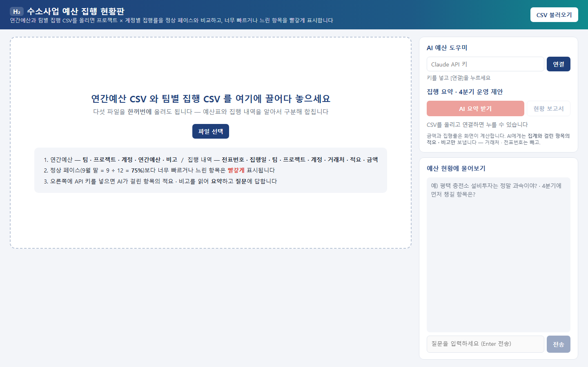
1 CSV 올리기
화면만 있으면 됩니다
→
2 주의 항목 표시
계산은 화면이 합니다
→
3 AI 요약
여기서 AI가 적요를 읽습니다
→
4 현황 보고서
AI 요약이 한 장으로
예산집행_충전인프라팀.csv 한 줄이 집행 한 건
| 집행일 | 계정 | 적요 | 금액 |
|---|---|---|---|
| 2026-02-22 | 인허가·안전 | 고압가스 안전검사 수수료 | 57,600,000 |
| 2026-05-20 | 설비투자 | 저장용기 제작 계약금 (30%) | 420,000,000 |
| 2026-07-08 | 설비투자 | 고압 압축기 계약금 (30%) | 780,000,000 |
| 2026-08-26 | 설비투자 | 부지 토목공사 기성 (1차) | 520,000,000 |
| ··· 40건 — 전표번호 · 팀 · 프로젝트 · 거래처 열도 있습니다 | |||
파일 다섯 개 예산표 하나 + 팀마다 하나
늘 하던 일
매달 팀마다 집행 내역을 받아 붙이고, 예산표와 맞춰 집행률을 계산하고, 너무 빠르거나 느린 곳의 사정을 물어 보고합니다.
기준은 아직 없습니다
정상 페이스와 무엇을 「주의」로 볼지는 실습에서 직접 정합니다.
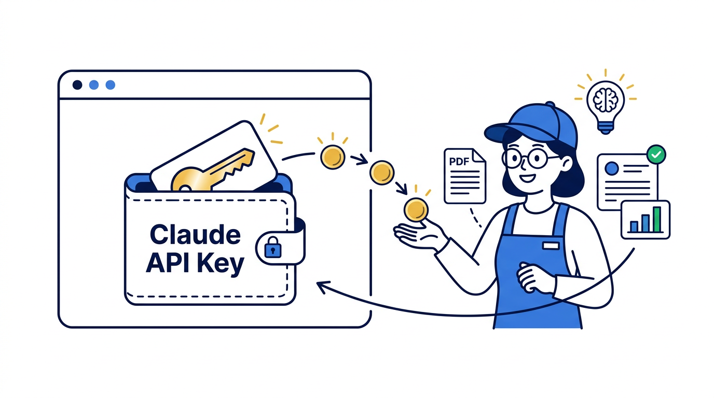
AI에게 일을 시킬 때마다 여기서 돈이 나갑니다
메모장에 저장해 뒀다면
그대로 꺼내서 쓰면 됩니다
저장해 두지 않았다면
발급 화면을 닫으면 다시 볼 수 없습니다
H Chat Pro 왼쪽 메뉴 Personal API Key 에서
OTP 인증 후 다시 발급받으세요
OTP 인증을 한 번 더
CHAPTER 2
API 키가 진짜 되는지 확인하고, 가장 단순한 AI 앱 하나를 손에 쥡니다.
Claude에게 연결부터 확인하는 화면을 만들어 달라고 했습니다.
이렇게 부탁했습니다
SDK는 설치하지 않고 · 모델은 Sonnet
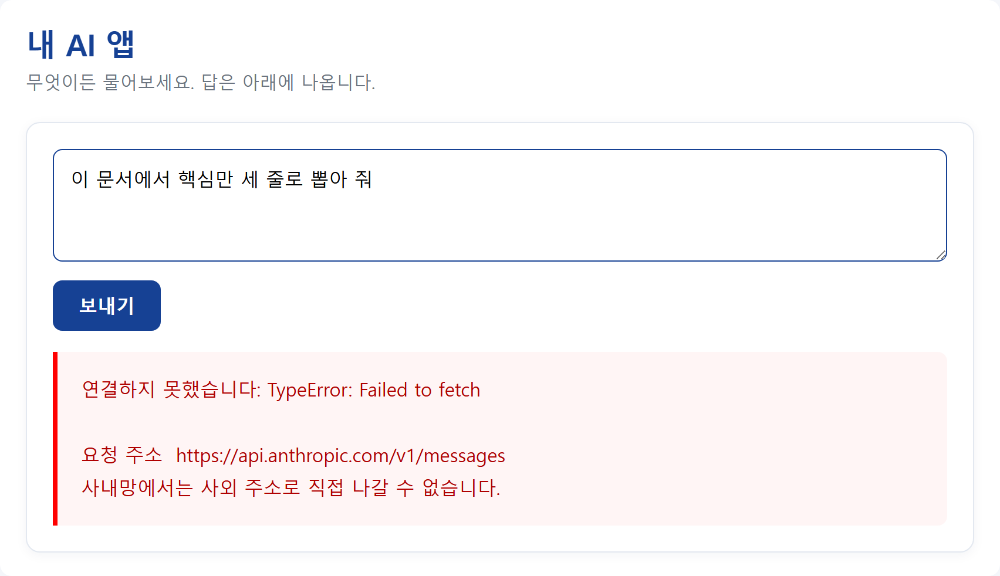
그런데 눌러 보면 — 연결 실패
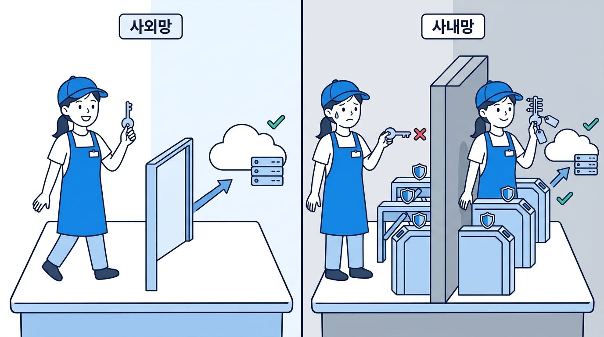
사외망 — 집 · 카페
열쇠(API 키)만 있으면 화면이 바로 나갑니다. 세상에서 가장 흔한 방식이라, AI 도 이 방식으로 만들어 줍니다.
사내망 — 회사 안
같은 방법으로는 문턱에서 막힙니다. 그래서 통과권을 가진 심부름꾼에게 밖을 대신 다녀오게 합니다 — 그것도 말로 시키면 됩니다.
강의자료
C:\work\강의자료
작업 폴더
C:\work\강의자료\M4\base
app.html · server.js · 예산 · 집행 CSV 5개
복사하지 않고 이 폴더에서 바로 실습합니다 — 꼬이면 강사에게 base 폴더를 새로 받습니다
1 base 폴더의 주소창에 code .
code .
2 VS Code 터미널에서 claude
claude
3 Claude 가 뜨면 /effort → high
앱을 만드는 일은 생각할 것이 많습니다 — 조금 느려도 더 오래 생각하게 합니다. → 로 high 에 맞추고 Enter
/effort
강의자료의 base 폴더 — 이 두 파일
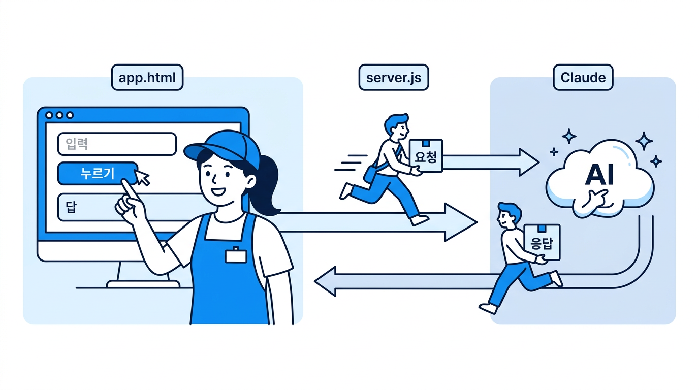
누르면 심부름꾼이 다녀옵니다
app.html — 보는 화면
적는 칸 · 누르는 버튼 · 답이 나오는 자리. 사람이 보고 만지는 쪽입니다.
server.js — 뛰어다니는 심부름꾼
요청을 들고 나갔다가 응답을 들고 돌아옵니다. 화면은 밖에 나갈 일이 없습니다.
아래는 이 두 파일을 만들 때 쓴 원본 프롬프트의 내용입니다 — 오늘 직접 치지는 않습니다.
중계 서버 server.js 에 건 조건원본 프롬프트에서는 claude-proxy.js
화면 app.html 에 건 조건
이 폴더의 server.js 를 실행해서 중계 서버를 띄워줘.
서버는 꺼지지 않게 계속 띄워 두고,
터미널에 찍힌 주소를 브라우저까지 열어줘.
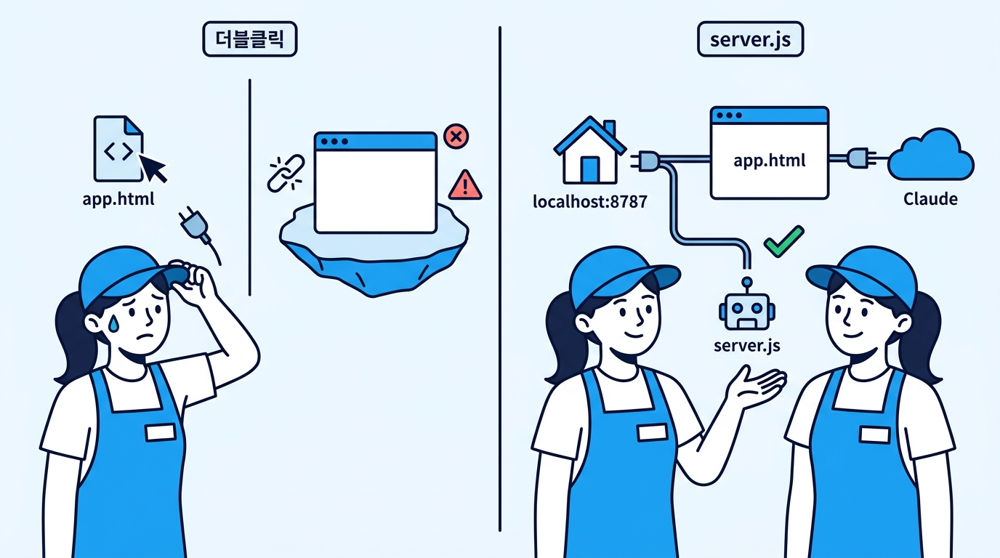
왼쪽처럼 더블클릭하면 선이 빠진 채입니다 — 오른쪽처럼 주소로 들어가야 이어집니다
이렇게 뜨면 성공
터미널에 READY http://localhost:8787, 브라우저에 연결 테스트 화면.
안 열리면 터미널에 찍힌 그 주소를 주소창에 붙여넣습니다.
localhost 가 뭔가요
내 컴퓨터 자신을 부르는 이름입니다 — 밖에서는 들어올 수 없습니다. 뒤의 8787 은 그 안의 몇 번 창구인지입니다.
더블클릭하면 왜 안 되나
① 8787 이 이미 쓰이면 서버는 8788 로 옮겨 가는데, 더블클릭한 화면은 8787 만 부릅니다.
② 앱을 고치다 파일이 나뉘면 그때부터 열리지 않습니다.
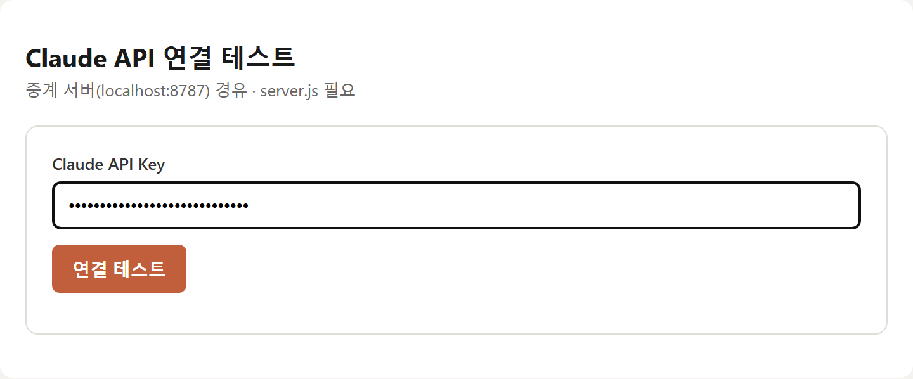
키는 나만
화면 공유 · 메신저 · 게시판에 올리지 않습니다.
코드는 한 줄도 쓰지 않았습니다. 띄워 달라고 말했을 뿐입니다.
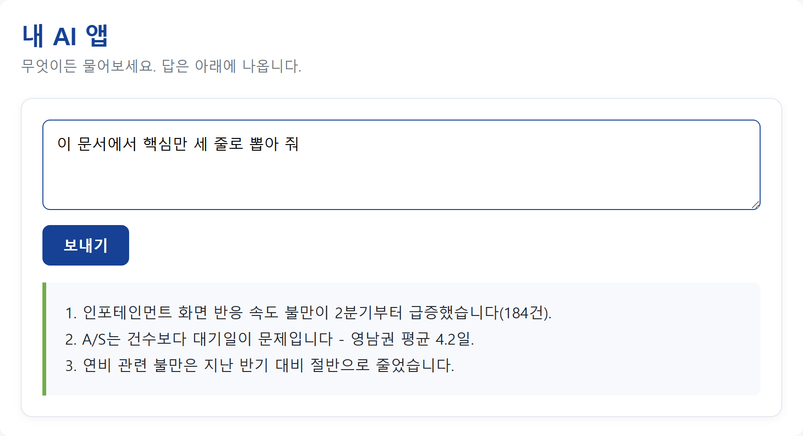
CHAPTER 3
한 번에 다 시키지 않습니다. 계획서를 먼저 쓰게 하고, 한 단계씩 확인하며 만듭니다.
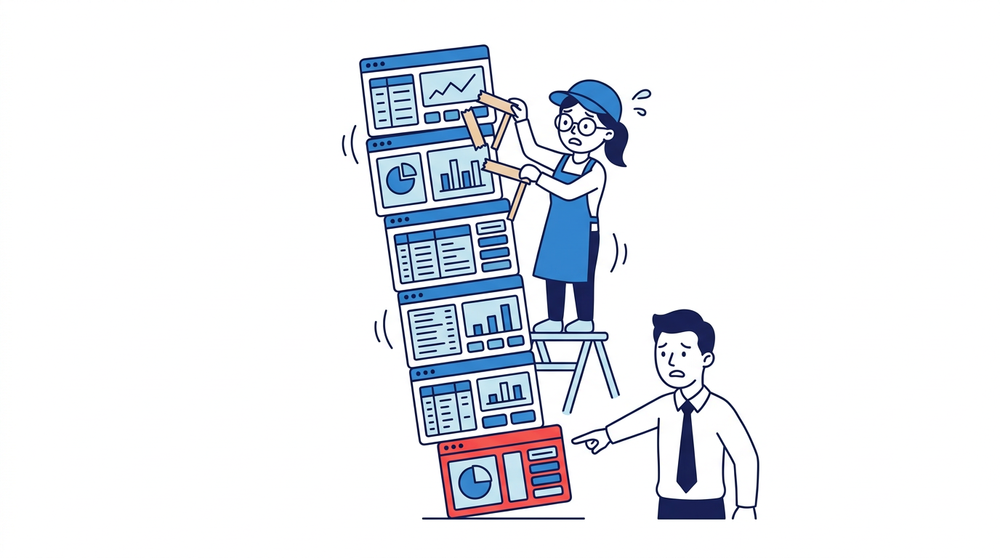
한 번에 크게 만들고 고치면
처음 엇나간 것을 대화로 고칠수록 더 꼬입니다
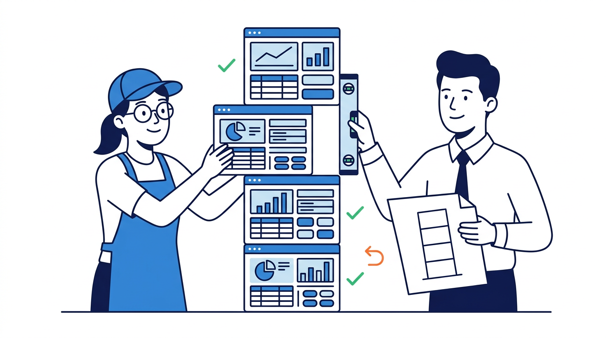
한 층씩, 내가 확인하며
엇나가기 전에 잡고, 그 층만 고칩니다
알바생이 한 단계 만들면 내가 보고 OK — 그래야 다음 계단으로 올라갑니다.
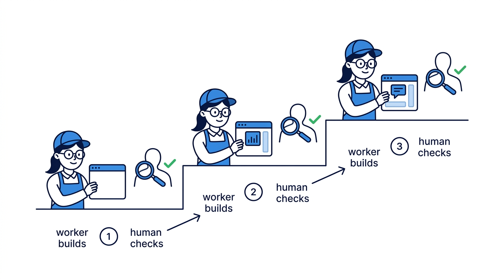
M3에서 만든 그 지침서입니다. 여기서도 목적과 규칙을 적어 둡니다.
CLAUDE.md 를 만들고 아래 목적과 규칙을 적어줘.
[목적]
1) 연간예산 CSV 와 팀별 집행 CSV 를 여러 개 올리면 합쳐서, 팀 · 프로젝트 · 계정별 연간예산 대비 집행률을 정상 페이스와 비교해 보여준다.
2) 기준을 벗어난 항목은 빨갛게 표시하고, AI 가 걸린 항목의 적요 · 비고를 읽어 요약하고 답한다.
[규칙]
1) AI 는 server.js 를 거쳐 부르고, API 키는 화면에서 받는다.
2) 새 프로그램은 설치하지 않는다.
3) 항상 가장 단순한 방법으로 만든다.
4) 한 번에 하나씩 만들고, 끝나면 멈춰서
내가 무엇을 확인하면 되는지 알려준다.
5) 화면은 app.html 하나로 만든다.
6) 금액 계산은 화면이 하고, AI 에게는 거래처 · 전표번호를 보내지 않는다.
적어 두면 달라지는 것
매번 말하지 않아도 알아서 읽습니다. 대화를 새로 켜도 그대로 남습니다.
6번을 넣는 이유
거래처와 전표번호는 외부 업체 · 회계 정보입니다. AI에게는 집계와 적요 · 비고만 — 금액 계산도 화면이 정확히 합니다.
규칙은 짧게
길게 적을수록 지켜지지 않습니다. 필요할 때 한 줄씩 더하면 됩니다.
지침서 다음은 예산 기준입니다 — 무엇을 「주의」로 볼지 사람이 정합니다.
예산기준.md 를 만들고 아래 기준을 적어줘.
1) 기준일 = 9월 말 마감 자료 (2026-09-30)
2) 정상 페이스 = 경과 개월 ÷ 12 = 9 ÷ 12 = 75%
3) 집행률 = 집행 누계 ÷ 연간예산 (프로젝트 × 계정마다)
4) 주의(과속) — 집행률이 정상 페이스보다 15%p 이상 높은 항목
5) 주의(저조) — 집행률이 정상 페이스보다 30%p 이상 낮은 항목
그리고 CLAUDE.md 목적 3번에 이 한 줄을 더해줘.
「집행률 계산과 주의 표시는 예산기준.md 를 따른다.」
머릿속 기준을 문서로
「이 정도면 너무 빨리 쓴다」를 적어 두면 누가 봐도 같은 항목이 걸립니다.
숫자는 우리 팀 것으로
오늘은 이 숫자 그대로 따라 합니다. 월별 집행 계획에 맞춰 바꾸는 것은 실습이 끝난 뒤 한 줄로.
정상 페이스란
1년 예산을 매달 1/12씩 쓴다고 본 선입니다. 9월 말이면 75% — 많이 벗어나면 연말에 모자라거나 남습니다.
바로 만들지 말고 계획부터 세워줘.
예산 · 집행 CSV를 올리면 프로젝트 × 계정별 집행률을 정상 페이스와 비교해 주의할 항목을 표시하고,
AI가 집행 사유를 요약하고 질문에도 답하는 App 을 만들 거야.
PHASE.md 파일에 아래 네 단계로 나눠 적어줘.
· Phase 1 — 가짜 데이터로 화면만 만들기
· Phase 2 — 예산 · 집행 CSV를 합쳐 프로젝트 × 계정별 집행률을 계산하고, 예산기준에 걸린 항목 표시하기
· Phase 3 — 집행 사유 AI 요약 · 예산 현황에 묻는 챗봇 붙이기
· Phase 4 — 집행 현황 보고서를 PDF로 저장 · 통합 집행표 CSV 내려받기 · 빈 화면 안내
단계마다 내가 무엇을 확인하면 되는지도 적어주고,
내가 OK 할 때까지 다음 단계로 넘어가지 마.
왜 문서로 적게 하나
말로만 하면 다음 대화에서 잊어버립니다. 파일로 남으면 “Phase 2 실행해줘” 한마디로 이어집니다.
여기서는 만들지 않습니다
계획서만 받습니다. 읽어 보고 마음에 안 들면 이 단계에서 고칩니다.
PHASE.md
표현은 조금 달라도 됩니다. 네 단계로 쪼개져 있고, 확인할 것이 적혀 있으면 됩니다.
이게 Human-in-the-loop
각 단계 끝에서 멈추고 사람을 부릅니다. 내가 보고 OK 해야 다음으로 갑니다.
앞으로 할 말은 짧습니다
“Phase 1 실행해줘” → 보고 → “좋아. Phase 2 실행해줘”
Phase 1 실행해줘.
기능은 아직 넣지 않습니다. 보이는 것부터 맞춥니다.
왜 가짜 데이터로
진짜 자료를 붙이기 전이라 빨리 나오고, 마음껏 갈아엎을 수 있습니다.
여기서 정할 것
무엇이 위에 오는지 · 몇 칸으로 나눌지 · 무엇을 크게 보여줄지
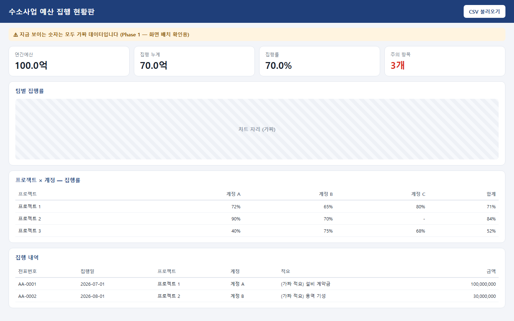
받아 보고 바로 되돌려 보냅니다.
이렇게 말하면 됩니다
아니야. 다시 해와. 지금 얼마나 빨리 쓰고 있는지 안 보여
월별 누적 집행률과 정상 페이스 선을 겹친 차트를 넣어줘
화면 좋아. 이제 Phase 2 실행해줘.
다 되면 브라우저를 새로고침하고, base 폴더의 CSV 다섯 개를 한꺼번에 올려 봅니다.
이 단계에는 AI가 없습니다. 합치고 계산하는 일은 전부 화면이 합니다.
앞 단계는 건드리지 않습니다
방금 맞춰 둔 화면은 그대로 두고 속만 채웁니다 — 그래서 멀쩡한 곳이 망가지지 않습니다.
사내 실제 데이터는 올리지 않습니다
오늘은 base 폴더의 가짜 예산 · 집행 내역으로만 합니다. 실제 집행 내역에는 거래처 · 계약 정보가 들어 있습니다.
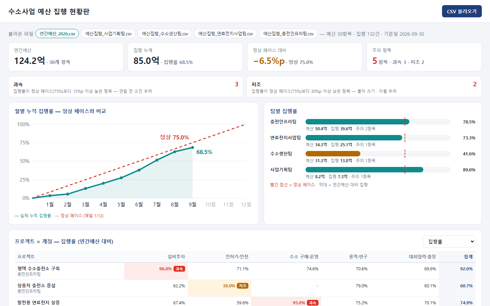
가짜 데이터에는 문제 항목을 미리 심어 두었습니다. 정답과 맞춰 봅니다.
| 항목 (프로젝트 · 계정) | 걸린 기준 | 집행률 | 정상 대비 |
|---|---|---|---|
| 국제 수소 박람회 · 대외협력·출장 | 과속 | 104.0% | +29.0%p |
| 평택 수소충전소 · 설비투자 | 과속 | 96.0% | +21.0%p |
| 발전용 연료전지 · 수소 구매·운영 | 과속 | 95.0% | +20.0%p |
| 그린수소 수전해 · 설비투자 | 저조 | 28.0% | −47.0%p |
| 상용차 충전소 · 인허가·안전 | 저조 | 38.0% | −37.0%p |
| 주의 항목 | 과속 3 · 저조 2 | 5개 |
숫자가 다르면
상용차 충전소 인허가가 안 걸려.
38% 면 정상 75% 보다 37%p 낮으니까 걸려야 해.
예산기준.md 다시 읽고 고쳐줘.
과속 ≠ 낭비
평택 설비투자 96%는 계약금이 앞당겨 나간 것일 수 있습니다. 시점 차이인지 정말 넘칠지 — 판단은 사람이 합니다.
바꾸기 전 — 정상 페이스보다 15%p 이상 빠른 항목
바꾼 뒤 — 10%p 이상 빠른 항목
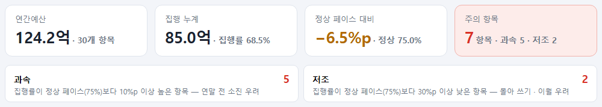
예산기준.md 의 과속 기준을 15%p 에서 10%p로 바꿔줘.
화면에도 똑같이 반영해줘.
사람이 다시 세지 않습니다
기준이 바뀌면 한 줄만 고칩니다. 5개 → 7개(건물용 연료전지 · 밸류체인 전략 용역)가 바로 나옵니다.
해 보고 되돌립니다
확인했으면 “15%p 로 되돌려줘” 한마디면 됩니다.
좋아. Phase 3 실행해줘.
기능을 더할 때도 같습니다. 한 단계씩, 확인하고 넘어갑니다.
AI에게 무엇을 보내나
화면이 계산한 집계와 걸린 항목의 적요 · 비고만 — 거래처 · 전표번호는 보내지 않습니다.
막히면
“PHASE.md 다시 읽고 지금 어디까지 했는지 알려줘” 라고 물어봅니다.
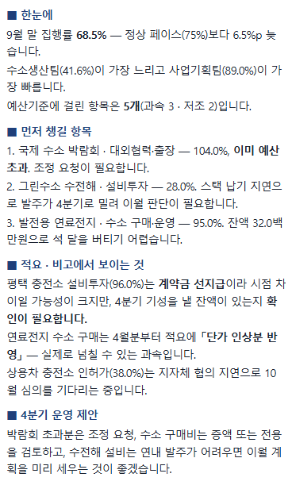
[AI 요약 받기] — 먼저 챙길 항목부터
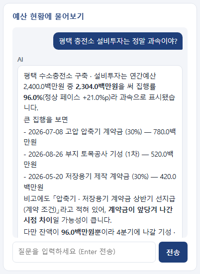
묻는 말에 적요 · 비고를 근거로 답합니다
확인 — 숫자가 같은가
AI가 말한 5개 · 96.0%가 화면의 숫자와 같은지 봅니다.
사람이 못 보던 것
같은 과속이라도 평택 설비는 계약금 선지급, 연료전지 수소 구매는 단가 인상 — 132건의 적요를 다 읽지 않아도 갈라 줍니다.
단정하지 않게
적요 · 비고에 없는 원인은 지어내지 않고 “확인이 필요하다”로 씁니다.
좋아. 마지막으로 Phase 4 실행해줘.
완성이라고 부르려면
현황 보고서에 팀별 표 · 걸린 항목 · AI 요약이 있나
통합 집행표를 엑셀로 열면 그대로 쓸 수 있나
CSV를 올리기 전 화면에 안내가 있나
더 해 보고 싶다면
기준을 우리 팀 것으로 바꿔 보고, 월별 집행 계획 대비 비교나 계정 간 전용 검토도 같은 방식으로 붙여 봅니다.
[현황 보고서] → 새 창
[인쇄 · PDF로 저장] 을 누르면 그대로 PDF 한 장이 됩니다.
[통합 집행표 내려받기]
네 팀 파일이 집행 한 장의 표(132행)로 — 항목 예산 · 집행률 · 걸린 기준 열까지, 엑셀에서 바로 열립니다.
보내기 전에
예산 조정 · 이월은 각 팀과 확인한 뒤 확정합니다 — 판단은 사람이 합니다.
오늘 만든 것보다, 이 시키는 방법이 더 오래 남습니다.
CHAPTER 4
실행.bat 과 zip 으로 동료에게 그대로 건넵니다.
지금 만든 화면은 중계 서버가 떠 있어야 열립니다. 그대로는 못 줍니다.
필요한 것을 한 폴더에 모아 압축하면 그게 배포판입니다.
넷을 모아 압축하면 끝
zip 은 실습 · 팀 안 시연까지
여럿이 정식으로 쓰게 하려면 사내 배포 가이드를 따릅니다 — 두 장 뒤에 있습니다.
연습용을 따로 만들지 않습니다. 지금까지 만든 그 앱을 그대로 묶습니다.
동료에게 그대로 줄 수 있게 배포 폴더를 만들어줘.
dist 폴더에 app.html · server.js · 예산기준.md 를 복사해줘 (CSV 빼고).
더블클릭하면 서버가 뜨고 브라우저가 열리는 실행.bat 도 만들어서 같이 넣어줘 —
Node.js 가 없으면 설치 안내를 띄우고, 한글이 깨지지 않게, 오류가 나도 창이 바로 닫히지 않게.
윈도우 배치 파일이니 줄바꿈은 반드시 CRLF 로 저장해줘.
만든 다음 네가 직접 실행해서 READY 가 찍히는지 확인하고, 안 되면 고쳐줘.
확인이 끝나면 실행 중인 서버를 모두 종료하고, dist 폴더를 zip 으로 압축해줘.
왜 .bat 까지 만드나
받는 사람이 터미널을 몰라도 되게 하려는 것입니다. 더블클릭 한 번으로 서버가 뜨고 화면이 열립니다.
이 네 가지가 들어가야 합니다
Node.js 가 없으면 설치 안내
브라우저를 알아서 열어 줌
한글이 깨지지 않음
무슨 일이 생겨도 창이 바로 닫히지 않음
두 줄을 왜 더 넣나
.bat 은 줄바꿈 하나로 통째로 깨집니다 — 검은 창이 번쩍 닫히는 게 그 증상입니다. 만든 사람이 직접 실행해 확인하게 시킵니다.
① HTML 파일 하나정적 — 서버 · DB 없이 화면만
대시보드 · 자료 소개 · 결과 시각화 같은 읽기 전용
Confluence 에 올립니다
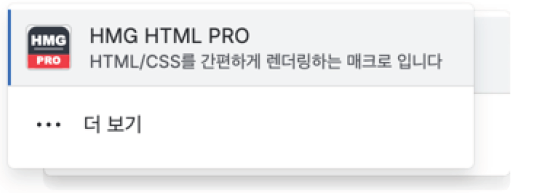
② 앱 / 웹페이지동적 — 서버 · DB · 로그인
입력하고 결과를 받는 기능 · 사내 데이터를 주기적으로 반영
PoC → 바이브코딩 기반 웹페이지 배포 환경 준비 중
사내 데이터 · 시스템 · API 연동 → 표준 플랫폼 H Cloud 에서 정식 배포 · 운영
ICT Request 개발지원요청으로 접수
링크는 사내망에서만 열립니다
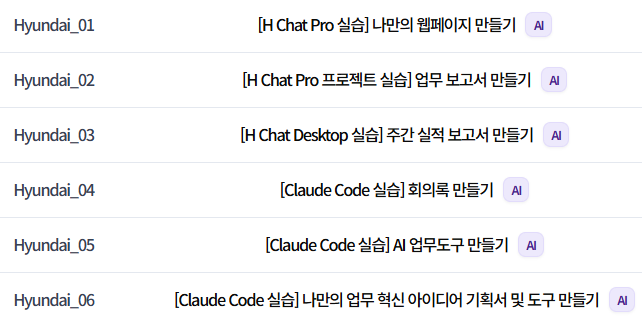
목록에서 Hyundai_05 를 고릅니다
가장 중요한 확인
API 키가 파일 안에 남아 있으면 그대로 유출됩니다. 반드시 먼저 확인합니다.
이어서 M5. 나만의 업무 혁신 아이디어 기획서